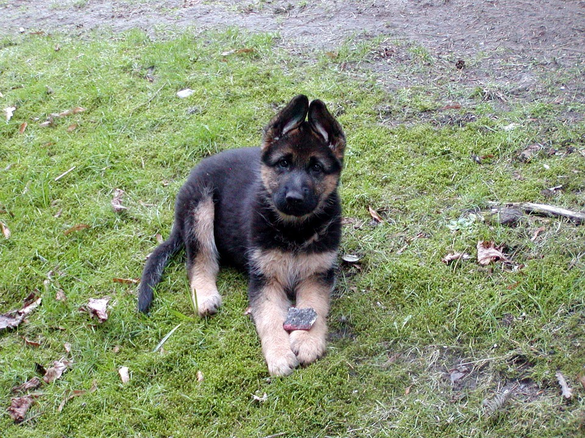

Vous trouverez sur cette page des photographies de l'Altdeutsche Schäferhund

Vous souhaitez revenir sur la page d'acceuil ? Cliquez ici
Ici pour le caractère de l'Altdeutsche Schäferhund
Ici pour les besoins de l'Altdeutsche Schäferhund
Ici pour mes conseils sur l'Altdeutsche Schäferhund
Et ici pour connaître davantage caractéristiques physiques